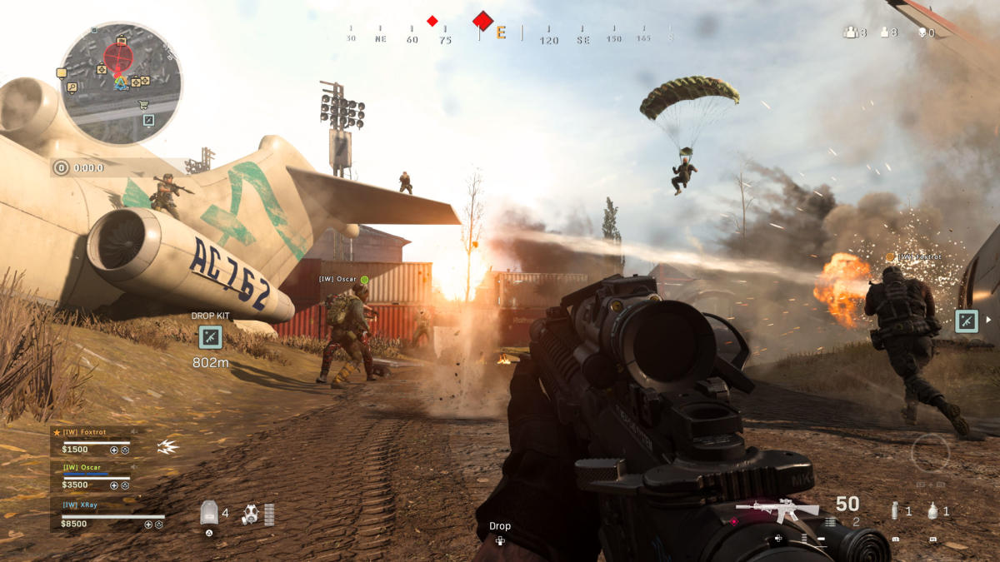

Az akció játékok egy nagy és változatos kategóriát képviselnek a videojátékok világában. Ezek a játékok általában gyors tempójúak, reflexekre építenek, és sok esetben kihívást jelentenek a játékosok számára.
- Intenzív harcok: Az akció játékok általában izgalmas harci jeleneteket tartalmaznak, amelyekben a játékosnak gyors döntéseket kell hoznia, hogy túléljen és győzedelmeskedjen az ellenfelek felett.
- Különböző fegyverek és képességek: Ezek a játékok gyakran számos fegyvert és képességet kínálnak a játékosoknak, amelyekkel változatos módon tudnak harcolni és feladatokat megoldani.
- Platformelemek: Sok akció játék kombinálja a harci jeleneteket platformelemekkel, például ugrálással és mászkálással, ami további kihívást jelenthet és változatosságot adhat a játékélményhez.
- Sztori vagy küldetés alapú játékmenet: Bár az akció játékok fő hangsúlya általában a harcokon van, sok közülük rendelkezik egy mélyebb történettel vagy küldetésekkel, amelyek bevonják a játékost a világba és a karakterek sorsába.
- Multiplayer mód: Sok akció játék rendelkezik multiplayer lehetőséggel, amely lehetővé teszi a játékosoknak, hogy online vagy helyi hálózaton keresztül küzdhessenek egymással vagy együttműködjenek más játékosokkal.
- Grafika és hanghatások: Az akció játékok gyakran kiemelkedő grafikával és hanghatásokkal rendelkeznek, amelyek segítenek még inkább a játékosokat a játékba való beleéléssel és a hangulat fokozásával.
- Kihívások és fejlődés: Sok akció játék fokozatosan nehezedő kihívásokkal rendelkezik, és lehetőséget ad a játékosoknak a karakterük fejlesztésére vagy a képességeik fejlesztésére a játék során.
 Kalandjátékok olyan videojátékok, amelyek főként a történetmesélésre és a karakterek fejlődésére összpontosítanak. Általában a játékosoknak különböző feladatokat és rejtvényeket kell megoldaniuk, gyakran felfedezve egy nagyobb, gyakran nyitott világot.
Kalandjátékok olyan videojátékok, amelyek főként a történetmesélésre és a karakterek fejlődésére összpontosítanak. Általában a játékosoknak különböző feladatokat és rejtvényeket kell megoldaniuk, gyakran felfedezve egy nagyobb, gyakran nyitott világot. Trees are woody perennial plants that are a member of the kingdom Plantae. All species of trees are grouped by their genus, family, and order. This helps make identifying and studying trees easier.
Trees are woody perennial plants that are a member of the kingdom Plantae. All species of trees are grouped by their genus, family, and order. This helps make identifying and studying trees easier.